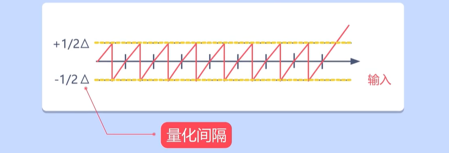
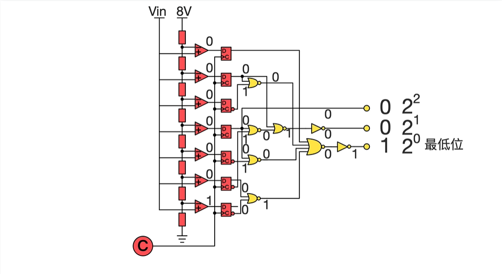
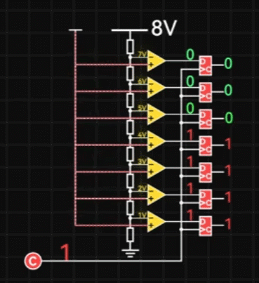
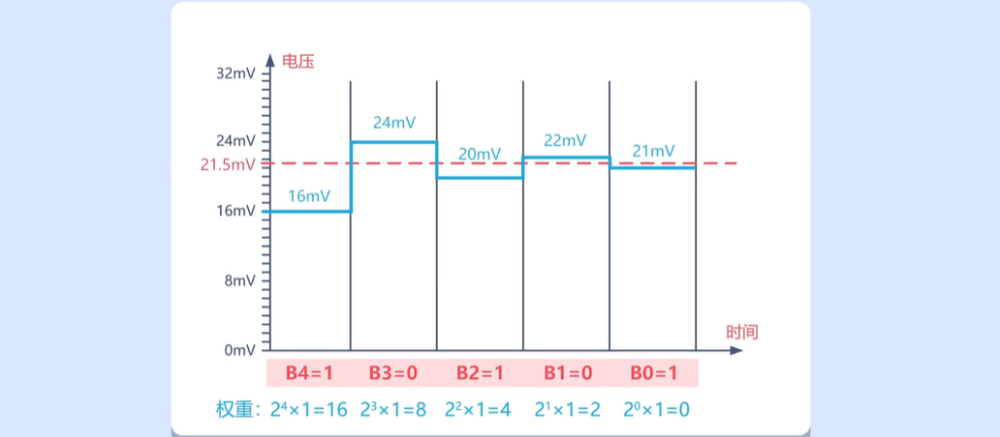
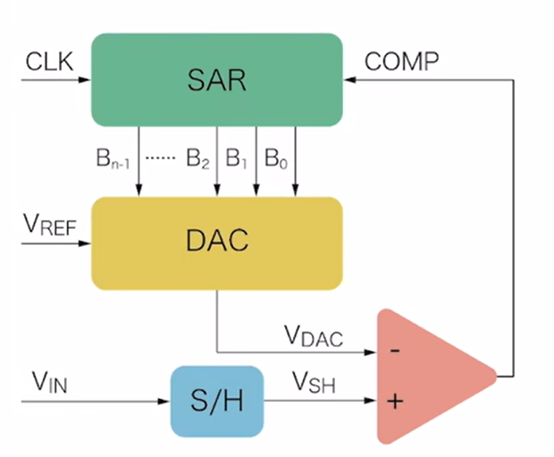
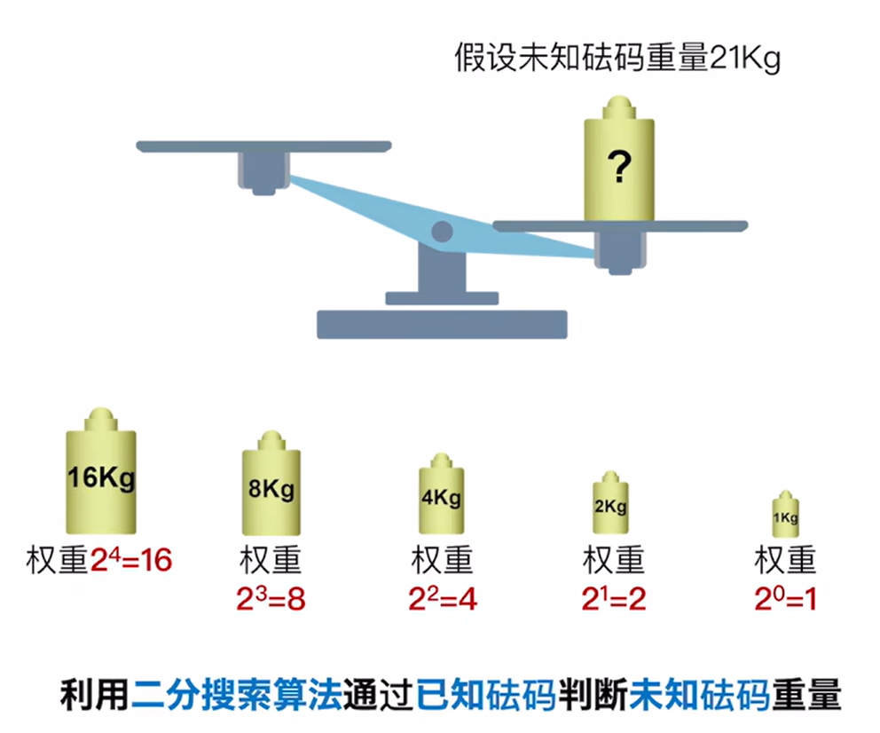
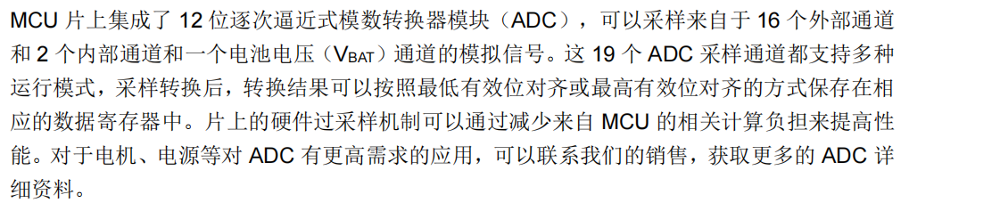

<!DOCTYPE lake>
<h1 data-lake-id="AdwZi" id="AdwZi"><span data-lake-id="u13fc0f58" id="u13fc0f58">模拟信号和数字信号</span></h1><p data-lake-id="u708844fe" id="u708844fe"></p><p data-lake-id="u9b8c48c7" id="u9b8c48c7"><span data-lake-id="u22adab9d" id="u22adab9d">模拟信号</span></p><p data-lake-id="u65de623f" id="u65de623f"><span data-lake-id="u9e79f4e5" id="u9e79f4e5">自然界中大多数物理量是连续变化的,比如温度、声音、压力等灯,它们在一定时间内,可以有无限多个不同的取值,这些信号就是模拟信号。模拟信号就是指用连续变化的物理量所表示的信号。</span></p><p data-lake-id="u3598b079" id="u3598b079"><span data-lake-id="u3aaf6528" id="u3aaf6528">自然界中的物理量都需要通过传感器将其转换成电信号后,才能进行进一步的分析,传感器在模拟物理量的变化,</span><span data-lake-id="u41de1233" id="u41de1233">模拟信号是对原始物理量连续变化的近似表示。</span></p><p data-lake-id="uf672dacb" id="uf672dacb"><span data-lake-id="u02974ded" id="u02974ded">数字信号</span></p><p data-lake-id="u10d4b564" id="u10d4b564"><span data-lake-id="u4ccef333" id="u4ccef333">数字信号是由离散的数字值构成的信号，这些数字值代表了某种物理量在一定时间间隔内的采样值。数字信号可以由模拟信号经过采样和量化转换得到，也可以由数字电路产生。数字信号通常由二进制数表示，可以在计算机和数字电路中进行处理和传输。</span></p><h1 data-lake-id="DUVPy" id="DUVPy"><span data-lake-id="u1e44d987" id="u1e44d987">ADC原理</span></h1><p data-lake-id="u3099082d" id="u3099082d"><span data-lake-id="ue0d83d90" id="ue0d83d90">ADC（Analog-to-Digital Converter）即模数转换器，是一种将模拟信号转换为数字信号的电子元器件，用于实现模拟信号的数字化处理和采集。在嵌入式系统中，ADC广泛应用于传感器信号采集、电源管理、环境检测等领域。</span></p><p data-lake-id="u48dc1003" id="u48dc1003"></p><h2 data-lake-id="fiIFh" id="fiIFh"><span data-lake-id="u7415eaf2" id="u7415eaf2">采样</span></h2><p data-lake-id="u0c712b45" id="u0c712b45"><span data-lake-id="u3c73ab52" id="u3c73ab52">采样指的是ADC将模拟信号的振幅值在一定时间间隔内进行测量，并将测量结果转换为数字值</span></p><p data-lake-id="u15dc3d48" id="u15dc3d48"></p><p data-lake-id="u679efd27" id="u679efd27"><span data-lake-id="ua4039f04" id="ua4039f04">采样之后得到的信号通常被称为抽样信号，因为在时间轴上它是离散的，但在幅值轴上是连续的。</span></p><p data-lake-id="u4dc8f96c" id="u4dc8f96c"><span data-lake-id="u25cf43be" id="u25cf43be">我们可以把采样想象成给一个不断变化的信号拍照。每拍一张照片，就记录下信号在那一瞬间的值。这些照片就相当于数字信号中的一个个样本点。</span></p><ul list="u7786335c"><li data-lake-id="u1391803b" fid="ud4bdc75a" id="u1391803b"><strong><span data-lake-id="u9cb5d5b4" id="u9cb5d5b4">采样频率:</span></strong><span data-lake-id="uff3deb2c" id="uff3deb2c"> 每秒钟拍多少张照片，就决定了采样频率。采样频率越高，得到的数字信号就越接近原始的模拟信号。</span></li><li data-lake-id="uafec57da" fid="ud4bdc75a" id="uafec57da"><strong><span data-lake-id="u8211c65e" id="u8211c65e">采样周期:</span></strong><span data-lake-id="u89c64dc6" id="u89c64dc6"> 相邻两次采样之间的时间间隔。采样周期是采样频率的倒数。</span></li></ul><p data-lake-id="u8e97badd" id="u8e97badd"><strong><span data-lake-id="u2714599c" id="u2714599c">采样的重要性</span></strong></p><ul list="u02be473e"><li data-lake-id="u93c86473" fid="u382056f9" id="u93c86473"><strong><span data-lake-id="ub99242a6" id="ub99242a6">数字化:</span></strong><span data-lake-id="u2f5867b5" id="u2f5867b5"> 采样是将模拟信号数字化最基础的一步，为后续的数字信号处理打下了基础。</span></li><li data-lake-id="uc6b3bafc" fid="u382056f9" id="uc6b3bafc"><strong><span data-lake-id="u553b7d33" id="u553b7d33">精度:</span></strong><span data-lake-id="u52b50847" id="u52b50847"> 采样频率直接影响数字信号的精度。采样频率过低，可能会导致信号失真，甚至丢失部分信息。</span></li><li data-lake-id="ud041c02c" fid="u382056f9" id="ud041c02c"><strong><span data-lake-id="u1fe47db2" id="u1fe47db2">带宽:</span></strong><span data-lake-id="u8b36729c" id="u8b36729c"> 采样频率决定了ADC能够处理的信号最高频率。</span></li></ul><h2 data-lake-id="t0PMa" id="t0PMa"><span data-lake-id="u6ca971eb" id="u6ca971eb">量化</span></h2><p data-lake-id="u33e0a7f7" id="u33e0a7f7"><span data-lake-id="u02cfad32" id="u02cfad32">ADC将每个采样值转换为最接近的数字值，这个过程称为量化。量化过程中，模拟信号被映射到最接近的数字值</span></p><p data-lake-id="u8530d8de" id="u8530d8de"></p><p data-lake-id="u4b61eff1" id="u4b61eff1"></p><p data-lake-id="u1d5b6bcc" id="u1d5b6bcc"><span data-lake-id="u7a89c8ee" id="u7a89c8ee">量化之后的波形</span></p><p data-lake-id="uf71d59bc" id="uf71d59bc"></p><p data-lake-id="u16b8b1e2" id="u16b8b1e2"><span data-lake-id="ue48250a0" id="ue48250a0">量化误差</span></p><p data-lake-id="ua9200cf9" id="ua9200cf9"></p><p data-lake-id="uc815ddba" id="uc815ddba"><span data-lake-id="u9c6f5e60" id="u9c6f5e60">量化间隔越小，量化之后的波形分辨率越高，输入信号和输出信号越相似，系统精度越高</span></p><p data-lake-id="u46b1f16c" id="u46b1f16c"></p><blockquote data-lake-id="uf0f18a2c" id="uf0f18a2c"><p data-lake-id="u14189bcc" id="u14189bcc"><span data-lake-id="u829b65dc" id="u829b65dc">量化间隔越小,分辨率越高</span></p></blockquote><p data-lake-id="uacb16bf2" id="uacb16bf2"><span data-lake-id="uf2e307f5" id="uf2e307f5">分辨率</span></p><p data-lake-id="u1f9af85e" id="u1f9af85e"><span data-lake-id="u0a1a9778" id="u0a1a9778">ADC（模数转换器）的分辨率是指其能够表示的最小数字量的大小，通常以比特数（bits）表示。分辨率决定了ADC能够将输入信号转换为多少个数字值，影响着数字信号的精度和准确性。</span></p><p data-lake-id="u2a775a14" id="u2a775a14"></p><blockquote data-lake-id="ufd3201fc" id="ufd3201fc"><p data-lake-id="ueb30c4b2" id="ueb30c4b2"><span data-lake-id="ub663030e" id="ub663030e">经过量化后,模拟信号成功数字化了,还需要进行编码</span></p></blockquote><h2 data-lake-id="SIOdc" id="SIOdc"><span data-lake-id="u653f76ac" id="u653f76ac">编码</span></h2><p data-lake-id="uab9c6275" id="uab9c6275"><span data-lake-id="u7274bb49" id="u7274bb49">编码就是用0和1组合为每个量化区间编号,代替原来的电压值。</span></p><p data-lake-id="u7d8527df" id="u7d8527df"></p><h1 data-lake-id="rUzgP" id="rUzgP"><span data-lake-id="u8990a9bf" id="u8990a9bf">ADC的基本参数</span></h1><p data-lake-id="ucaf08803" id="ucaf08803"><span data-lake-id="ua6bdf41f" id="ua6bdf41f">ADC的基本参数包括以下几个方面：</span></p><ol list="u411b26df"><li data-lake-id="u5783bfc5" fid="u604f2e2c" id="u5783bfc5"><strong><span data-lake-id="ua8e2bd3e" id="ua8e2bd3e">采样率：</span></strong><span data-lake-id="u4244a515" id="u4244a515">ADC的采样率是指ADC每秒钟采样次数（Sample Per Second, SPS），即每秒钟可以将模拟信号采集多少次。采样率越高，速度越快</span></li><li data-lake-id="u9a39d18d" fid="u604f2e2c" id="u9a39d18d"><strong><span data-lake-id="u4693c626" id="u4693c626">分辨率：</span></strong><span data-lake-id="ua04233ee" id="ua04233ee">ADC的分辨率是指ADC输出数字信号的位数，也就是最终数字信号的精度。例如，12位分辨率的ADC的量化级别为2^12，即4096。常见有8位、10位、12位，16位、位数越高精度越高。</span></li><li data-lake-id="uf4429361" fid="u604f2e2c" id="uf4429361"><span data-lake-id="u3f3e5885" id="u3f3e5885">通道：ADC的通道是指ADC可以采集的模拟信号的输入通路。每个通道对应一个输入引脚，可以采集对应的模拟信号。</span></li><li data-lake-id="u4ee6c949" fid="u604f2e2c" id="u4ee6c949"><span data-lake-id="u35cdcc89" id="u35cdcc89">时钟：ADC的时钟是指ADC进行采样和量化的时钟信号，时钟频率决定了ADC转换速率的上限。</span></li></ol><h1 data-lake-id="Ipoew" id="Ipoew"><span data-lake-id="uabdd95a5" id="uabdd95a5">常见ADC类型</span></h1><h2 data-lake-id="LzqBm" id="LzqBm"><span data-lake-id="u144653be" id="u144653be">Flash ADC</span></h2><blockquote data-lake-id="u1526ae4f" id="u1526ae4f"><p data-lake-id="u812b9c99" id="u812b9c99"><span data-lake-id="ucf70511c" id="ucf70511c">闪存型模数转换器</span></p></blockquote><p data-lake-id="u5595f00a" id="u5595f00a"><span data-lake-id="u8871af10" id="u8871af10">采用并行比较的方式进行模数转换，速度快、精度高，常用于高速数据采集、图像处理、通信等应用场合。</span></p><p data-lake-id="ube8d4e06" id="ube8d4e06"></p><p data-lake-id="u4189448d" id="u4189448d"></p><p data-lake-id="ueb59d32d" id="ueb59d32d"><br/></p><table class="lake-table" data-lake-id="FVQK8" id="FVQK8" margin="true" style="width: 751px" width-mode="contain"><colgroup><col width="250"/><col width="251"/><col width="250"/></colgroup><tbody><tr data-lake-id="ua4417cd4" id="ua4417cd4"><td data-lake-id="u76fbd1ee" id="u76fbd1ee"><p data-lake-id="u94455516" id="u94455516"><span data-lake-id="u80b1eb5a" id="u80b1eb5a">模拟电压</span></p></td><td data-lake-id="u56702880" id="u56702880"><p data-lake-id="ucab6d6ca" id="ucab6d6ca"><span data-lake-id="u359a57ec" id="u359a57ec">输出</span></p></td><td data-lake-id="uad2103e3" id="uad2103e3"><p data-lake-id="u1991b423" id="u1991b423"><span data-lake-id="ufd739d5e" id="ufd739d5e">二进制值</span></p></td></tr><tr data-lake-id="u3f27207e" id="u3f27207e" style="height: 37px"><td data-lake-id="ubacd692d" id="ubacd692d"><p data-lake-id="u2c69d2cb" id="u2c69d2cb"><span data-lake-id="u2b9443f7" id="u2b9443f7">0-1V</span></p></td><td data-lake-id="ua91ee818" id="ua91ee818"><p data-lake-id="uc8c4ad5c" id="uc8c4ad5c"><span data-lake-id="u0a491f4b" id="u0a491f4b">0 0 0 0 0 0 0</span></p></td><td data-lake-id="uc5d9ee43" id="uc5d9ee43"><p data-lake-id="u76f77131" id="u76f77131"><span data-lake-id="u7a861d7c" id="u7a861d7c">000</span></p></td></tr><tr data-lake-id="u1498a01b" id="u1498a01b"><td data-lake-id="u7e673a2c" id="u7e673a2c"><p data-lake-id="u93643c26" id="u93643c26"><span data-lake-id="u7d834d2b" id="u7d834d2b">1-2V</span></p></td><td data-lake-id="u6ebe7a2d" id="u6ebe7a2d"><p data-lake-id="u729f2556" id="u729f2556"><span data-lake-id="u11fae55f" id="u11fae55f">0 0 0 0 0 0 </span><span data-lake-id="ud0a22b00" id="ud0a22b00">1</span></p></td><td data-lake-id="u527b214d" id="u527b214d"><p data-lake-id="u61bba7f3" id="u61bba7f3"><span data-lake-id="u4eb5a3b9" id="u4eb5a3b9">001</span></p></td></tr><tr data-lake-id="uc2b22bae" id="uc2b22bae"><td data-lake-id="uaec308c9" id="uaec308c9"><p data-lake-id="u09e22396" id="u09e22396"><span data-lake-id="u69018bc1" id="u69018bc1">2-3V</span></p></td><td data-lake-id="u502803d3" id="u502803d3"><p data-lake-id="u50539acd" id="u50539acd"><span data-lake-id="uc4ca8d38" id="uc4ca8d38">0 0 0 0 0 </span><span data-lake-id="u58a3e9c6" id="u58a3e9c6">1 1</span></p></td><td data-lake-id="uf04dbe32" id="uf04dbe32"><p data-lake-id="u6552072d" id="u6552072d"><span data-lake-id="u0d38bd88" id="u0d38bd88">010</span></p></td></tr><tr data-lake-id="u09459711" id="u09459711"><td data-lake-id="u50accc45" id="u50accc45"><p data-lake-id="uee44039d" id="uee44039d"><span data-lake-id="u4373743f" id="u4373743f">3-4V</span></p></td><td data-lake-id="u49501716" id="u49501716"><p data-lake-id="ua0d546b6" id="ua0d546b6"><span data-lake-id="u2e2b0f8d" id="u2e2b0f8d">0 0 0 0 </span><span data-lake-id="u1eba98c2" id="u1eba98c2">1 1 1</span></p></td><td data-lake-id="u8af7d837" id="u8af7d837"><p data-lake-id="u8f8eed78" id="u8f8eed78"><span data-lake-id="u62d7c33d" id="u62d7c33d">011</span></p></td></tr><tr data-lake-id="u9a1adf79" id="u9a1adf79"><td data-lake-id="u2a4b75af" id="u2a4b75af"><p data-lake-id="u4e1103d0" id="u4e1103d0"><span data-lake-id="u55ad5f3b" id="u55ad5f3b">4-5V</span></p></td><td data-lake-id="u314af198" id="u314af198"><p data-lake-id="ue9a2bf55" id="ue9a2bf55"><span data-lake-id="u85de7cbd" id="u85de7cbd">0 0 0 </span><span data-lake-id="u2b57d8d9" id="u2b57d8d9">1 1 1 1</span></p></td><td data-lake-id="u06f4347b" id="u06f4347b"><p data-lake-id="u07b76e34" id="u07b76e34"><span data-lake-id="u8baef2c3" id="u8baef2c3">100</span></p></td></tr><tr data-lake-id="u32ef5c8e" id="u32ef5c8e"><td data-lake-id="uef092097" id="uef092097"><p data-lake-id="uff4773da" id="uff4773da"><span data-lake-id="u6815f98f" id="u6815f98f">5-6V</span></p></td><td data-lake-id="u0519c894" id="u0519c894"><p data-lake-id="uab382575" id="uab382575"><span data-lake-id="uf48aaaa7" id="uf48aaaa7">0 0</span><span data-lake-id="uf4971071" id="uf4971071"> 1 1 1 1 1</span></p></td><td data-lake-id="ub1404f69" id="ub1404f69"><p data-lake-id="u24c37d0d" id="u24c37d0d"><span data-lake-id="ubc930a91" id="ubc930a91">101</span></p></td></tr><tr data-lake-id="ufbe41b8b" id="ufbe41b8b"><td data-lake-id="u111a36e1" id="u111a36e1"><p data-lake-id="ufaf599fa" id="ufaf599fa"><span data-lake-id="uccce9f64" id="uccce9f64">6-7V</span></p></td><td data-lake-id="udcd592f9" id="udcd592f9"><p data-lake-id="uc826b715" id="uc826b715"><span data-lake-id="u6af0ed65" id="u6af0ed65">0 </span><span data-lake-id="u0b97109c" id="u0b97109c">1 1 1 1 1 1</span></p></td><td data-lake-id="ub24bbaae" id="ub24bbaae"><p data-lake-id="u7df817b1" id="u7df817b1"><span data-lake-id="u5f5d0fd9" id="u5f5d0fd9">110</span></p></td></tr><tr data-lake-id="u1e9bc5a8" id="u1e9bc5a8"><td data-lake-id="u5957cab0" id="u5957cab0"><p data-lake-id="ue72cd759" id="ue72cd759"><span data-lake-id="u4bc3cccd" id="u4bc3cccd">7-8V</span></p></td><td data-lake-id="u8377ba4b" id="u8377ba4b"><p data-lake-id="u1e331e68" id="u1e331e68"><span data-lake-id="u5e9cf254" id="u5e9cf254">1 1 1 1 1 1 1</span></p></td><td data-lake-id="u9cc99ec6" id="u9cc99ec6"><p data-lake-id="ua2c4d842" id="ua2c4d842"><span data-lake-id="ue7c42114" id="ue7c42114">111</span></p></td></tr></tbody></table><ul list="u21e7ba0e"><li data-lake-id="u4ed526c7" fid="uece392e4" id="u4ed526c7"><span data-lake-id="u3f2fddfd" id="u3f2fddfd">范围0-8V，分辨率3bit，精度1V （7个比较器&amp;触发器）</span></li><li data-lake-id="u49775c6f" fid="uece392e4" id="u49775c6f"><span data-lake-id="u437629d6" id="u437629d6">范围0-8V，分辨率4bit，精度0.5V （15个比较器&amp;触发器）</span></li><li data-lake-id="u2a5a12a9" fid="uece392e4" id="u2a5a12a9"><span data-lake-id="u82633cf3" id="u82633cf3">范围0-8V，分辨率10bit，精度0.00785V （1023个比较器&amp;触发器）</span></li></ul><p data-lake-id="uae6c30f0" id="uae6c30f0"><strong><span data-lake-id="u894ceeb0" id="u894ceeb0">缺点：</span></strong><span data-lake-id="uf19a1ce8" id="uf19a1ce8">随着精度变高，内部元器件越多，尺寸和功耗越大，价格贵</span></p><p data-lake-id="ubd349c7d" id="ubd349c7d"><strong><span data-lake-id="u9406c097" id="u9406c097">优点：</span></strong><span data-lake-id="ue3fd2def" id="ue3fd2def">速度快，精度高</span></p><h2 data-lake-id="PwBo4" id="PwBo4"><span data-lake-id="ufda9f894" id="ufda9f894">SAR ADC</span></h2><blockquote data-lake-id="u7c5ed153" id="u7c5ed153"><p data-lake-id="u598e14a2" id="u598e14a2"><span data-lake-id="u871710ec" id="u871710ec">逐次逼近型模数转换器</span><span data-lake-id="u65bc88b8" id="u65bc88b8">Successive Approximation Register ADC</span></p></blockquote><p data-lake-id="u7bf4fbc4" id="u7bf4fbc4"><span data-lake-id="u6080da07" id="u6080da07">采用逐次逼近的方式进行模数转换，实现高精度的模拟信号转换。常用于低功耗、高精度的应用场合。</span></p><p data-lake-id="ub9b67493" id="ub9b67493"></p><p data-lake-id="u4ad10dc2" id="u4ad10dc2"></p><p data-lake-id="u2f4eca67" id="u2f4eca67"><span data-lake-id="u4f52c639" id="u4f52c639">原理类比：</span></p><p data-lake-id="u95de0a1c" id="u95de0a1c"></p><h1 data-lake-id="KqYnP" id="KqYnP"><span data-lake-id="u2ec8383b" id="u2ec8383b">GD32F407的ADC</span></h1><p data-lake-id="u293987e6" id="u293987e6"></p><p data-lake-id="ue7084fd2" id="ue7084fd2"><br/></p><h2 data-lake-id="WTThw" id="WTThw"><br/></h2>